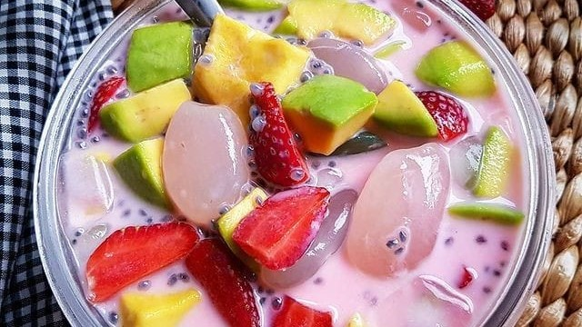

Es Buah
Bahan
- 1 buah alpokat, potong dadu
- 1 buah naga, potong dadu
- 4 potong pepaya, potong dadu
- 250 ml air hangat
- 2 sdm gula
- 1/2 sdt garam
- 1/4 sdt vanili
- 3 sdm kental manis
- 1 sdm krimer
Cara Membuat
- Campurkan semua buah yang sudah dipotong. Larutkan air, garam, vanili dan gula, aduk hingga larut.
- Masukkan kental manis dan krimer, lalu sirami dengan air, aduk rata.
Sup buah siap disajikan dengan tambahan es batu, atau bisa disimpan dalak lemari es agar lebih nikmat.
- Note: untuk buah bisa disesuaikan ya. Bisa juga tambahkan nata de coco